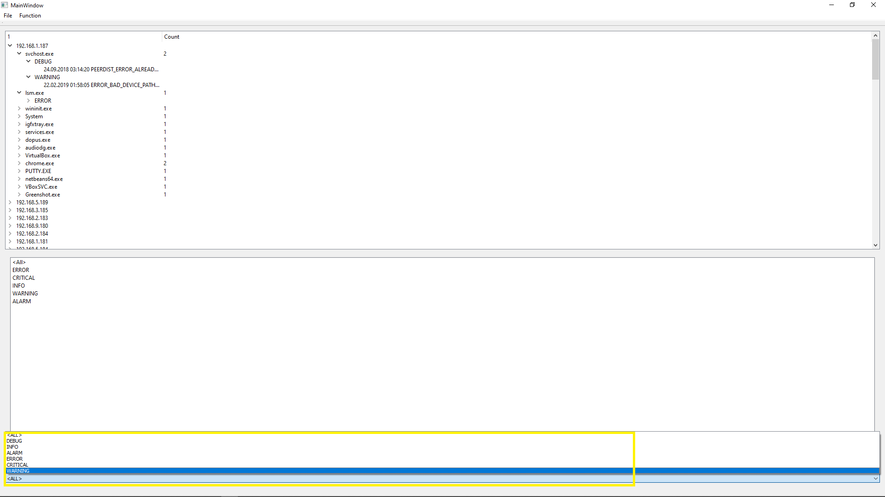
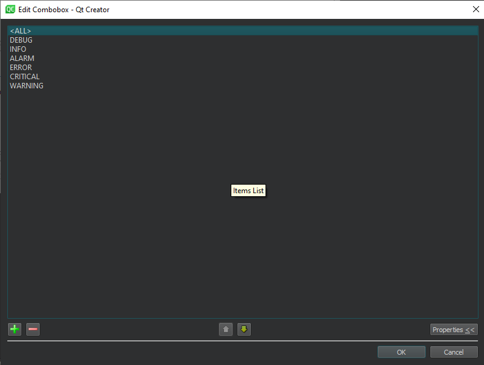

Làm việc với danh sách chuỗi QComboBox tương tự như làm việc với ListWidget, với sự khác biệt là danh sách chuỗi trong đó được "thu gọn" và chỉ hiển thị khi người dùng tương tác với nó.
Tương tự với ListWidget, bạn có thể đặt danh sách các chuỗi được hiển thị cho ComboBox ở chế độ Thiết kế. Để thay đổi các mục của tiện ích ComboBox, hãy nhấp đúp vào nó ở chế độ thiết kế và định cấu hình các mục của nó trong hộp thoại xuất hiện.
Hoặc trong quá trình thực thi ứng dụng, như sau:
ui -> comboBox -> addItems ({ "cat" , "dog" , "cow" , "golgfish" });
Bạn có thể tìm ra số lượng mục được người dùng chọn bằng phương thức currentIndex () và văn bản đã chọn hoặc đã nhập bằng currentText ();
Một điểm khác biệt quan trọng so với ListWidget là khả năng chỉnh sửa văn bản trong trường đầu vào của tiện ích ComboBox. Để thực hiện việc này, hãy đặt thuộc tính có thể chỉnh sửa của nó thành true trong chế độ thiết kế hoặc bật tính năng chỉnh sửa trong mã chương trình, ví dụ, trong phương thức khởi tạo cửa sổ:
ui->comboBox->setEditable(true);
Sau đó, người dùng sẽ có thể viết văn bản của riêng mình trong trường đầu vào, sẽ có sẵn thông qua thuộc tính currentText (). Nếu văn bản do người dùng nhập không khớp với bất kỳ mục nào trong ComboBox, thì giá trị của currentIndex () sẽ là -1.